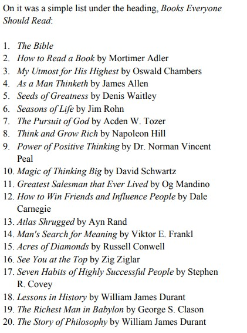

The pursuit of personal growth and success is a journey filled with challenges and opportunities for learning. In Chapters 4-7 of the book, the character Charlie imparts invaluable lessons to Michael about overcoming adversity, the power of a positive attitude, the importance of goal setting, and the necessity of life-long learning. These themes resonate deeply with my own aspirations and can serve as guiding principles in my quest for a fulfilling life.
In Chapter 4, Charlie shares stories of individuals who faced significant challenges yet emerged stronger and more successful. This discussion emphasizes that adversity is not merely an obstacle but a vital catalyst for personal growth. The key takeaway is that resilience, coupled with a positive mindset in the face of hardship, can pave the way for success. This perspective encourages me to embrace my struggles, viewing them as essential learning experiences rather than insurmountable barriers. By adopting this mindset, I can navigate challenges with greater confidence and determination, ultimately transforming setbacks into stepping stones toward my goals.
Chapter 5 delves into the importance of maintaining a positive attitude. Charlie explains how our mindset influences our actions and outcomes. He discusses practical techniques for cultivating positivity, such as practicing gratitude, surrounding ourselves with supportive individuals, and reframing negative thoughts. This chapter resonates with me as I recognize the significant impact that my attitude has on my daily life. To implement these lessons, I plan to keep a gratitude journal, noting things I am thankful for each day. Additionally, I will consciously choose to surround myself with positive influences—friends, mentors, and uplifting literature—to nurture a constructive outlook on life. By doing so, I aim to foster a more optimistic perspective that will drive me toward success.
In Chapter 6, the conversation shifts to the significance of setting clear and actionable goals. Charlie emphasizes that defining both short-term and long-term goals is essential for success. He encourages Michael to write down his goals and regularly review them, reinforcing the idea that clarity provides direction and motivation. This structured approach to goal setting aligns with my aspirations and has inspired me to take the time to define my objectives more clearly. I will utilize the SMART criteria—specific, measurable, achievable, relevant, and time-bound—to create a roadmap for my ambitions. By breaking down larger goals into manageable steps, I can maintain focus and motivation on my journey, transforming daunting aspirations into achievable milestones.
Chapter 7 highlights the concept of life-long learning, where Charlie argues that while formal education lays the foundation for knowledge, self-education is crucial for personal and professional growth. He outlines three key methods of self-education: reading books, learning from successful individuals, and reflecting on personal experiences. This chapter resonates with my desire for continuous improvement and has inspired me to make reading a regular part of my routine. I will choose books that challenge my perspectives and expand my knowledge, as well as seek mentorship and engage with individuals who inspire me. Reflecting on my own experiences will also be essential, allowing me to analyze what works and what doesn’t, thereby fostering a cycle of continuous improvement.
The lessons presented in these chapters advocate for a proactive approach to life, encouraging resilience, positivity, goal-oriented actions, and a commitment to self-education. By integrating these principles into my daily routine, I can cultivate a richer, more successful, and fulfilling life. The journey of personal development is ongoing, and the insights gleaned from these chapters will serve as valuable tools in navigating the complexities of life, ultimately guiding me toward achieving my aspirations and leading a meaningful existence.
As a student pursuing a BSc in Computer Science, I am excited about the opportunities this degree offers in the fast-evolving tech landscape. Throughout my studies, I have developed a strong foundation in various essential skills that are crucial for success in this field.
Key Skills Acquired:
Programming Proficiency:
I have gained proficiency in multiple programming languages, including Python, Html, and C. This skill allows me to develop software applications, solve complex problems, and automate tasks effectively.
Problem-Solving Abilities:
My coursework and projects have honed my ability to approach problems logically and creatively. I am adept at breaking down complex issues into manageable parts, enabling me to find innovative solutions in both academic and real-world scenarios.